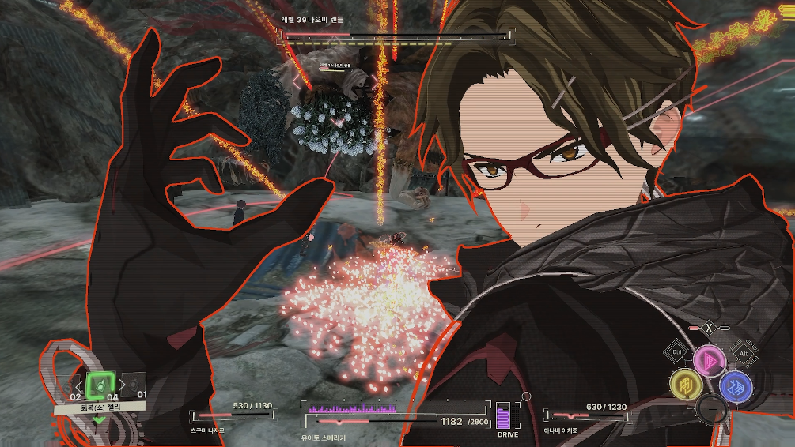
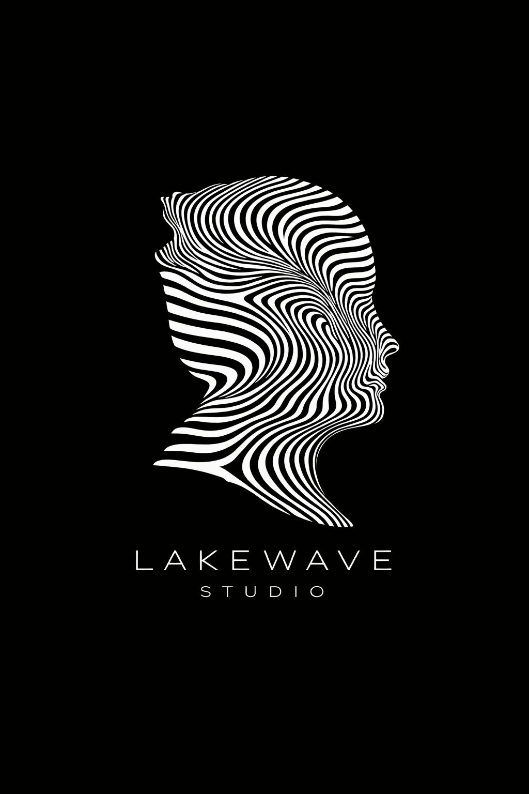
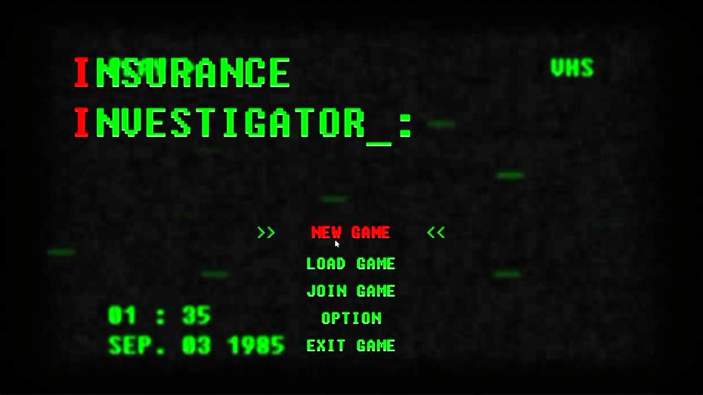
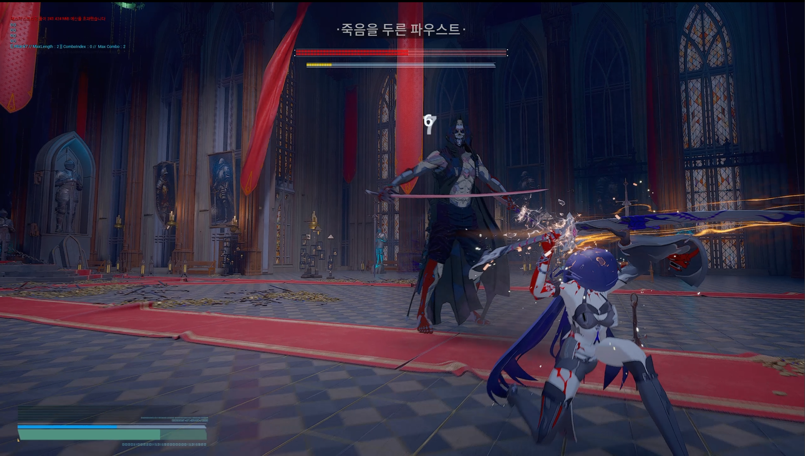
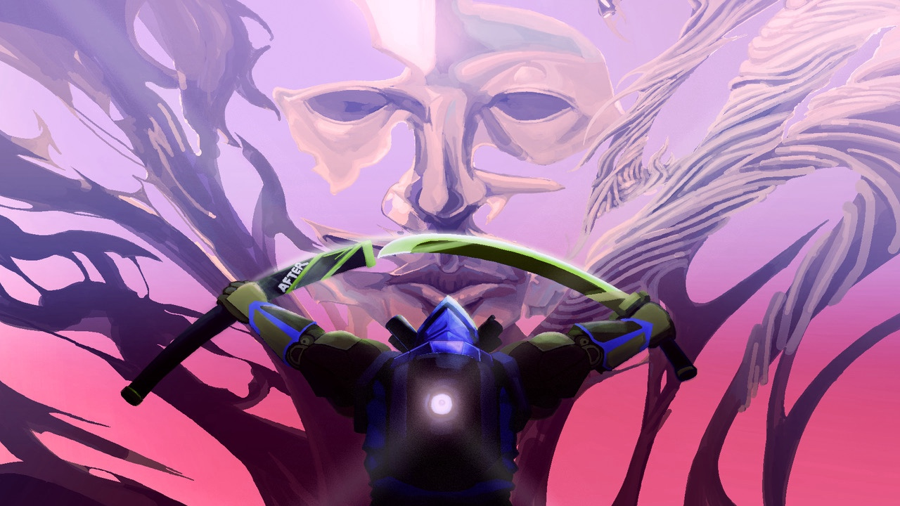
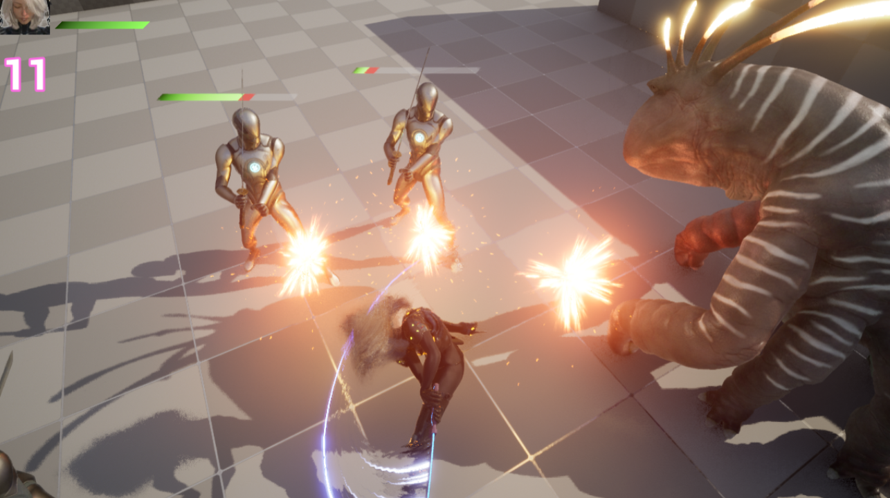
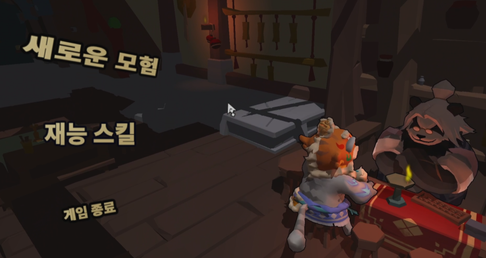
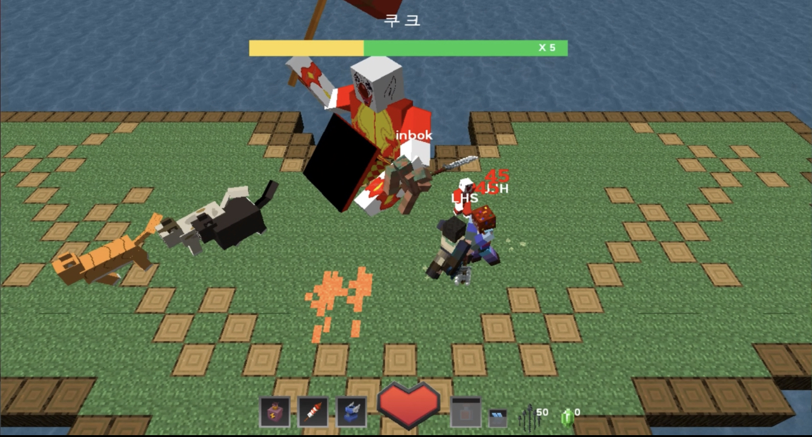
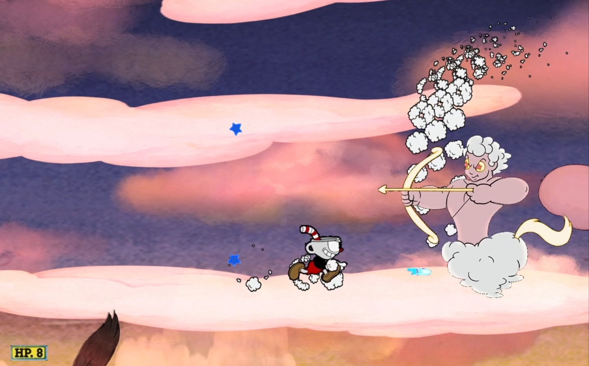

DIRECT3D 11 / 2023
01TEAM / 6 PEOPLE
Scarlet Strings · 모작
VFX System & Tool · Final Boss
Direct3D 11 기반 3D 팀 프로젝트에서 전투의 시각적 흐름을 만드는 VFX 시스템과 도구를 구현하고, 최종 보스 카렌의 1·2페이즈와 8개 패턴을 연결했습니다.
GAME CLIENT PROGRAMMER
규칙과 시스템을 구현해, 플레이어가 오래 기억할 경험을 만드는 게임 프로그래머입니다.
C++와 Unreal Engine을 중심으로 전투·VFX·상호작용을 구현해 왔습니다. Direct3D 11로 렌더링과 이펙트 시스템의 구조를 이해했고, Unreal Engine에서는 플레이어 액션과 전투 흐름을 설계·구현하며 이를 확장하고 있습니다.
01 / ABOUT
게임의 좋은 경험은 탄탄한 규칙과 자연스러운 상호작용에서 출발한다고 믿습니다.
무대 연출과 3D 기구 설계를 경험하며, 작은 요소도 전체 경험의 흐름 안에서 작동해야 한다는 감각을 익혔습니다. 이후 C++와 DirectX로 렌더링·이펙트 시스템의 기반을 만들고, Unreal Engine에서 플레이어 액션과 전투 흐름을 설계·구현하며 게임 클라이언트 프로그래머로 성장하고 있습니다.
저는 결과만 구현하는 데 그치지 않고, 팀이 이해하고 확장할 수 있는 구조를 남기는 것을 목표로 합니다.
02 / SELECTED WORK
역할과 문제, 구현 결과를 중심으로 정리한 프로젝트입니다.

VFX System & Tool · Final Boss
Direct3D 11 기반 3D 팀 프로젝트에서 전투의 시각적 흐름을 만드는 VFX 시스템과 도구를 구현하고, 최종 보스 카렌의 1·2페이즈와 8개 패턴을 연결했습니다.
PROJECT ARCHIVE / 09

UNREAL ENGINE 5 / 2026.04 — IN PROGRESSCombat Systems · Full Scope
Studio LakeWave · NDA 적용 협업 · 공개 승인 범위 수록
언데드 솔져와 크로우를 비롯한 몬스터 전투, 플레이어 상태, AI, 카메라와 VFX까지 전투 전 영역을 구현하고 있습니다.

UNREAL ENGINE 5 / 2025.04 — 05
UNREAL ENGINE 5 / 2024.12 — 2025.03Just Dodge · AI · Air Combat
현업자와 함께한 사이드 프로젝트에서 저스트 닷지, AI Behavior Tree, 공중 상태·피격, Physics Animation과 기획 후속 트러블슈팅을 맡았습니다.

UNREAL ENGINE 5 / 2024.11 — 2025.01C++ · GAS · Combat · Animation
Blueprint 액션 흐름을 바탕으로 C++와 GAS를 적용하고, 플레이어·애니메이션·인벤토리·UI의 책임을 다시 정리한 개인 프로젝트입니다.

UNREAL ENGINE 5 / 2024.10 — 11Action Prototype · Animation · UI
Blueprint로 전투 프로토타입을 완성하고, 애니메이션·상태·UI가 한 흐름으로 이어지게 구성한 개인 프로젝트입니다.

DIRECTX 11 / 2022.12 — 2023.02Rendering Framework & Tool
렌더링 파이프라인을 바탕으로 맵·카메라·내비게이션 도구와 셰이더 기반 표현을 구성했습니다.

DIRECTX 9 / 2022.09 — 10VFX · Multiplayer Boss
이펙트와 파티클, 멀티플레이 보스 몬스터를 구현하며 협업 코드 흐름을 익혔습니다.

WINAPI / 2022.0703 / SKILLS
01
게임플레이 로직 · 상태 · 충돌 · 렌더링 기반 구현
02
Blueprint 프로토타이핑 · 전투 흐름 · 애니메이션 연동
03
렌더링 구조와 셰이더 기반의 VFX 구현 경험
FOUNDATIONS
04 / TIMELINE
경력의 흐름은 간결하게, 게임 개발 과정은 월 단위로 자세히 정리했습니다.
01 / JOURNEY SUMMARY
수원과학대학교건축과 입학 · 중퇴
학점은행제건축공학 학사
동성직업전문학교기계 요소 설계 · 3D 기구 설계
쥬신게임아카데미게임 클라이언트 과정
어소트락 게임 아카데미게임 개발 교육 과정
탑스테이지현장관리팀
월딘3D 기구 설계
LS엠트론하이테크센터 · 3D 기구 설계
브레드랩제과·제빵 생산
02 / GAME DEVELOPMENT
프로젝트 사이의 시간도 개인 학습과 구현을 이어 온 게임 개발 과정으로 표시했습니다.
각 블록은 기간을, 점선 블록은 진행 중인 작업을 의미합니다. 노란 외곽선은 현업 협업 프로젝트로, 성장 체감이 크다고 느낀 프로젝트를 뜻합니다.